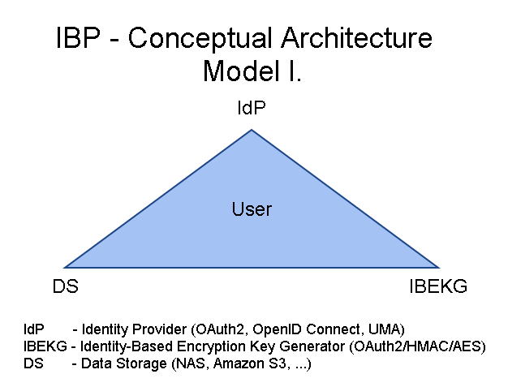

Identity-Based Privacy
My name is Igor Zboran, I am a software engineer with over twenty years accumulated experience in the software architecture, development and product design. I'd like to transform my knowledge to a useful product or service that customers wish to use and buy.
If you are interested in my IBP/Crypto work, go for more information to the Encryption Key Generator website.
I have designed a new decentralized Identity-Based Privacy (IBP) trusted model built around OAuth2, OpenID Connect (OIDC) and User-Managed Access (UMA) standards. IBP model supports Privacy by Design (PbD) principles.
Why Identity and not Anonymity to preserve privacy? Easy, Anonymity does not overlap with Transparency, but Privacy does. Privacy hand in hand with Transparency, are the fundamental stones of the modern world.
IBP Use Cases:
- Secure Data Delivery Service - sharing encrypted information through data storage.
- Rich Communication Suite - meshed peer-to-peer communication between people, devices, and things.
IBP Model I. for Secure Data Delivery Service

IBP Model II. for Rich Communication Suite

IBP Pentagon Model Model I. merged with Model II.

IBP - overall opportunities:
- Rich Communication Services
- Secure electronic data delivery services
- Secure data storage for Electronic Postal Services
- Managed File Transfer (MFT) alternative
- Product Design and Development (engineering) data storage
- Secure data storage for Science & Research teams
- Supply chain collaboration
- Product information/Supply chain/BOM transparency
- Healthcare services
- Identity and Access Management for Internet of Things
- Data Exchange Hub
- Identity Hub
- New email-like services
- New telecommunications services